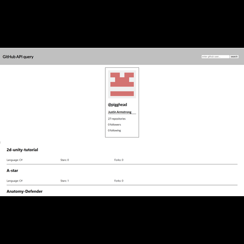

Github User Query
Used the Github API to make queries to Github users in the search bar.
Utilized a React app and the Github api to retrieve specific information about the searched Github user. This information includes their username and name, the number of repositories, the number of followers, and the number of people they are following. Below this profile blurb is a list of all of their public repositories. Each entry lists the primary language used in this repository, as well as the number of stars and number of forks for each one.
Technologies Used
- HTML/CSS
- Javascript
- ReactJS